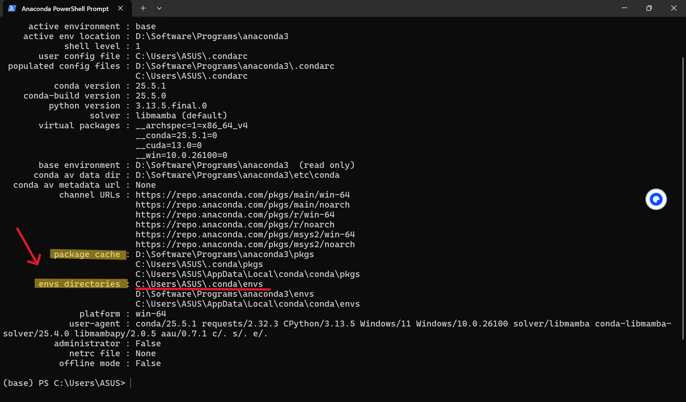
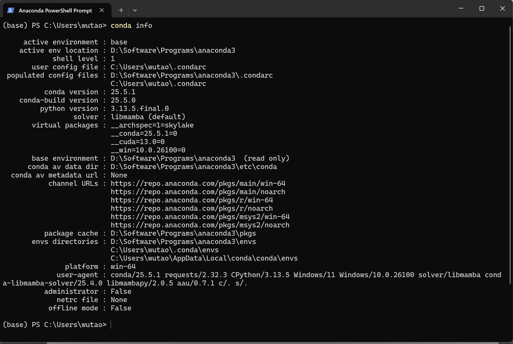
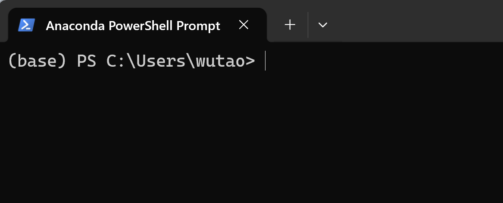
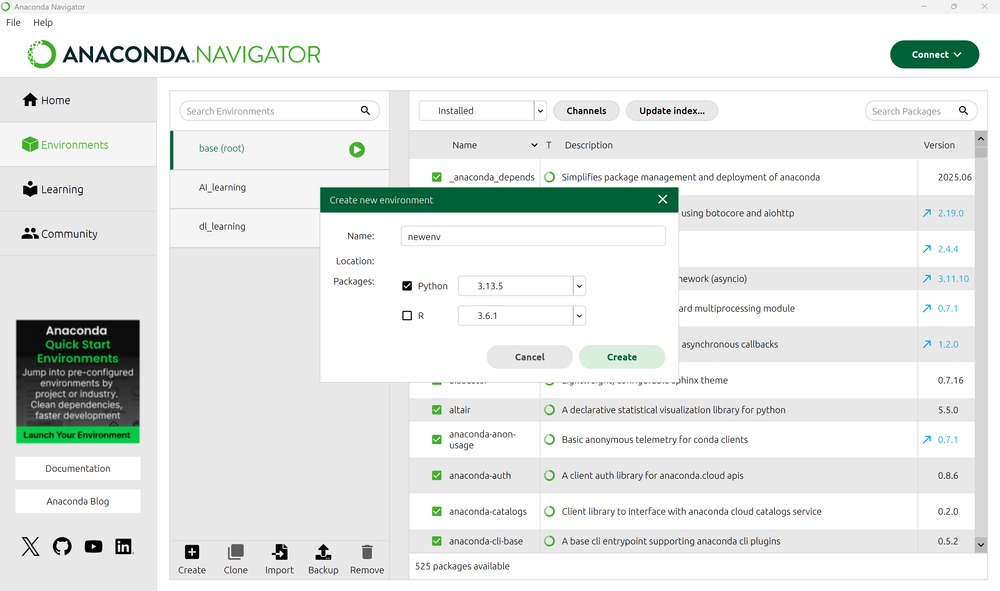

Anaconda 环境配置
什么是Anaconda
Anaconda 是一个用于科学计算的 Python 发行版，它可以帮助你轻松管理多个Python环境和各种依赖包。其核心价值在于通过 Conda 解决了环境管理和依赖管理的难题，并通过预装大量库提供了开箱即用的便利性，让开发者能够专注于解决问题本身，而不是浪费在配置环境上。（该内容由deepseek生成）
下载和安装
1、进入anaconda官网：https://www.anaconda.com
2、点击右上方Free Download下载
3、点击右框下方的Skip registration跳过登录注册，进入下载界面
4、点击左侧Distribution Installers下方的Download（Windows图标或Download for Windows）
注意
- 不要点右侧Miniconda Installer下的Download键，我们需要的是anaconda而不是miniconda
- 如果点击下载后无法加载出下载项，则需科学上网或者使用清华镜像源（初学推荐）
- 清华镜像源网站：https://mirrors.tuna.tsinghua.edu.cn/anaconda/archive/?C=M&O=D
5、提示下载成功后打开下载的exe文件。
点击Next开始、I Agree同意协议、选择All Users全局安装。
选择安装路径：选择自己安装软件的盘和文件夹，这里用D盘做示例。
注意
- 这里一定不要装在C盘（系统盘）！，后面安装的各种工具包全部都存放在软件的文件夹中，C盘空间会不够用！不知道应该怎么存放的可以看一下电脑系统基础教程。
- 切记在选择文件路径之后确保末尾是anaconda3，这样软件所有的文件都会放在annaconda3这个文件夹中，否则将全部摊开在上级目录里（图中programs文件夹中）。
Advanced Installation Options选择下图中的这三项（如有四项也只选择这三项），然后点击Install完成安装。时间可能会比较长，请耐心等待。
6、检验安装。从开始界面应用菜单栏找到Anaconda PowerShell Prompt打开，输入以下命令。可以看到安装的conda版本号即代表成功安装。
| 查看conda版本 | |
|---|---|
虚拟环境创建
什么是虚拟环境
Anaconda中的虚拟环境是一个独立的隔离空间，允许你为不同项目创建和管理互不干扰的Python运行环境。其核心作用是解决项目间库版本和依赖的冲突问题，确保每个项目都能拥有自己稳定的依赖库集合，从而保证项目的可移植性和复现性。（该内容由deepseek生成）
如何创建虚拟环境
前置操作
修改默认存储路径
现在我们已经将软件装在了D盘之中，在Anaconda PowerShell Prompt中输入以下命令来查看环境和工具包的存放路径
| 查看存放路径 | |
|---|---|
我们可以看到以下结果：

可以看到，envs directorier（环境目录）显示在C盘要将它移动到D盘中。每个选项后面的第一行路径为优先存放的路径，我们需要将第一行的路径改成我们想要的。
1、在Anaconda PowerShell Prompt中输入命令，生成.condarc文件（第一次使用，可能不存在）
| 生成.condarc文件 | |
|---|---|
2、在C:\Users\（自己的用户名）文件夹下找到.condarc文件，用记事本打开
3、将文件中的内容替换为以下内容并保存。
注意
在设置路径时，\envs和\pkgs前的路径（标红）根据自己安装的路径来填写，不要直接复制！
| 修改.condarc文件内容 | |
|---|---|
4、保存好修改的文件后，再次输入conda info命令查看修改后的路径。可以看到现在envs directorier的路径显示在D盘了。

修改镜像源
注意
- 如果有梯子且网速较快可以完全不用做这一步。若翻墙后下载时网速依然很慢，强烈推荐方案一。
- 不推荐方案二，有些库可能在清华镜像源中没有，会下载失败。
因为线路的限制，使用 Anaconda 的默认源下载速度过慢，可以更换国内的镜像源来提升下载速度。常用的是清华镜像源。
方案一：在下载命令后添加后缀（推荐）
| 需要添加的后缀 | |
|---|---|
优点：根据镜像内容和下载速度可以灵活选择不同的镜像源
缺点：每次下载都要在后面添加一次，过于繁琐
方案二：修改.condarc设置（非常不推荐）
在之前修改的基础上，增加镜像源配置，将整个文件改为如下所示：
优点：全局设置，之后下载默认使用清华镜像源，不需要加后缀
缺点：若镜像源提供方无对应镜像源或法继续提供镜像源，则需重新修改配置文件
接下来开始创建虚拟环境
方法一：用命令行创建
基本说明
打开Anaconda PowerShell Prompt，可以看到（base）PS （当前的路径），其中base就代表你现在所在的环境，在当前环境下，安装的解释器或工具包都只存在与当前环境中，离开当前环境中则无法调用。
例如在base环境下输入命令安装python，则python只能在base下运行，进入其他环境或者在系统目录下则无法运行。
Anaconda默认的环境是base，一般不在其中开展项目。应根据自己的需求创建一个新的环境。

创建环境
在命令行中输入创建命令。
AI_learning：创建的虚拟环境的名称，可以替换
python=3.11：将python3.11安装在环境中
| 创建虚拟环境 | |
|---|---|
如下图，等待一段时间后 会显示即将安装的包，需要输入y后回车确认开始安装（n是取消安装）。需等待一段时间，看到done即完成安装。
环境激活
创建环境之后，需要对环境进行激活，进入到环境下。
在命令行输入命令，激活名为AI_learning的环境。
| 激活虚拟环境 | |
|---|---|
可以看到现在前面部分由（base）变为了（AI_learning），说明我们已经进入环境中，接下来的操作都在该环境中进行。
一般来说，此时执行安装工具包命令时，工具包都会安装在这个环境的文件夹中（之前操作中设置的环境存放路径）。
此时（AI_learning）PS 后面的路径仍然是默认路径C:\Users\（你的用户名），相关的文件操作仍会在默认文件夹下进行。我们需要建一个文件夹来存放自己的项目文件（例如我现在在D:\Project下创建了名为AI_learning的项目文件夹），并通过输入以下命令进入到项目文件夹，接下来的文件操作都会在该目录下进行。
| 进入项目文件夹 | |
|---|---|
更多操作
查看所有虚拟环境
| 查看环境列表 | |
|---|---|
（待补充）
方法二：在Anaconda图形界面创建
点击左侧目录栏Environment。点击下方Create，输入环境名称，选择python版本后即可创建，新环境会在左侧列表中出现，点击后在右侧可以查看和管理该环境中已经安装的包。

配置环境变量
现在我们只能使用anaconda自带的命令行进行conda环境操作（必须打开Anaconda PowerShell Prompt），如果使用系统自带的命令行工具（PowerShell、cmd）则无法进行conda环境操作。通过配置系统环境变量，可以直接实现在系统命令提示行工具中进行conda环境操作。
1、打开设置，在搜索栏中输入“系统环境变量”，点击“编辑系统环境变量”
2、进入设置界面后，确认上方目录处于“高级”中，然后点击右下方“环境变量”
3、点击选中下方“系统变量”栏目中的Path，点击下方“编辑”
4、在新跳出的页面中点击“新建”，输入电脑中Anaconda安装的位置路径（例如图中D:\Software\Programs\anaconda3）和在软件位置路径的后方加上Scripts后缀的路径（例如图中D:\Software\Programs\anaconda3\Scripts）
注意
这里路径一定要改成自己电脑上的路径，不要直接复制！！！
5、添加完成后点击“确定”，继续点击上级页面的“确定”，一共点三次。点击确定后，页面全部自动关闭。不要点击右上角的❌关闭，否则配置无效。
6、现在打开终端PowerShell，输入以下命令激活之前创建的虚拟环境。成功激活后输入python，若能够正常运行，则代表配置成功。之后就可以使用系统自带的PowerShell或cmd，不需要每次都打开Anaconda PowerShell Prompt或Anaconda Prompt了。